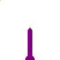
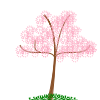

Sorry, I haven't worked to support smaller devices yet
I met a man who seemed to know everything about birds and joyously excited himself in that knowledge. He would talk about a bird and then stop to sing its song or call. With one finger in the air indicating note, he would sing and smile and tell us all that we had wanted to know. He lead us to a tall bush to show us a bird that from our perspective did not exist and he sang songs. Then a loud "pssh-pssh-pssh" flowed through his teeth and out of the bramble a fearful and tiny bird sprung up for all to see. The bird stayed for some time and we all gawked at it, but the man looked proud. Had he been 20 years younger I may have fell in love with him on that day.
It is for me easier to imagine to end of the world.
The winters are drier, the summers are hotter, the bugs are silent
and so am I.

After moving to the Arkansas north I was alone. I spent my afternoons on my bike, searching for the numerous streams that cut through the land. A mountain bike park had been built on the outskirts of town near a soft and shallow stream with large exposed rocks to rest on. The white noise of the water, the cool stream on my feet and the Arkansas heat. The sun would set soon and my body was tired.
We stopped at a historic Russian outpost for Rest and emptied the trash we had accumulated. The woman who worked the counter knew nothing of the local area, she commuted from the inland for work since none could afford to live where we stood. There was an Eastern Orthodox church, with a small decaying icon of our Lord behind poorly maintained glass. We made our way to the waters cliff and felt the joy and awe of the vast sea. A bench was placed at the cliffs edge, what we called the best bench in the world. Coming back from this wonder, in the tall grass I saw a small bird. Like a raven but too small to be one, and I passively wondered who I was in the company of. As we walked they moved to be away from us and in an instant a flash of vibrant red that vanished. A red wing blackbird.

There is abundance, hidden in plain sight. Arkansas is the land of forgotten abundance and joy. Every spring the streets blush with pink inviting the town to share a table, but most do not remember how to listen. The flowers of the Eastern redbud are snappy and midly sweet, giving off a bright neon pigment that brings me joy when mixed with a small amount of acid. In early fall the pods form and peas grow like lentils. Each tree provides more than one could eat, and yet no one eats. Here as with the Ancient PawPaw we have forgotten who feeds us and who cares for us. Yet that gracious mother never stops providing and never fails to decorates our home so that we may still see beauty.
Death defines the Anthropocene.
Life and Earth God gave us as a gift.
At every turn, dispite pleading, we chose death.
Who are the decendents of Cain?